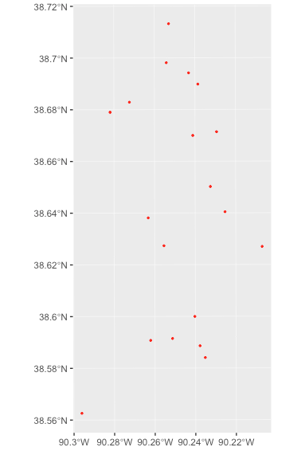

Wrangling Crime Data with R
Christopher Prener, Ph.D.
2019-03-22
Source:vignettes/compstatr.Rmd
compstatr.RmdOverview
The goal of compstatr is to provide a suite of tools for working with crime data made public by the City of St. Louis’s Metropolitan Police Department.
Motivation
Among cities in the United States, St. Louis has the distinction of having the highest or one of the highest violent crime and homicide rates since 2010. It therefore presents an important site for social scientists, public health researchers, and health care providers as well as policy makers to understand the effects of violent crime on urban communities.
The City’s crime data, however, are difficult to work with and present a number of challenges for researchers. These data are inconsistently organized, with all data before 2013 and some months of 2013 itself having eighteen variables. Beginning during 2013, most (but not all) months have twenty variables, many of which are named differently from their pre-2014 counterparts. These inconsistencies, and the fact that working with their data requires managing over 120 spreadsheets that each download with with a .html file extension, are the motivating force behind compstatr.
We therefore provide a set of tools for accessing, preparing, editing, and mapping St. Louis Metropolitan Police Department (SLMPD) crime data, which are available on their website as .csv files. The categorization tools that are provided will work with any police department that uses 5 and 6 digit numeric codes to identify specific crimes.
Installation
We recommend that users install sf before proceeding with the installation of compstatr. Windows users should be able to install sf without significant issues, but macOS and Linux users will need to install several open source spatial libraries to get sf itself up and running. The easiest approach for macOS users is to install the GDAL 2.0 Complete framework from Kyng Chaos.
For Linux users, steps will vary based on the flavor being used. Our configuration file for Travis CI and its associated bash script should be useful in determining the necessary components to install.
Once sf is installed, the easiest way to get compstatr is to install it from CRAN:
The development version of compstatr can be accessed from GitHub with remotes:
Tips
- All functions support non-standard evaluation, meaning you can use either quoted or unquoted inputs for arguments.
- Use RStudio for its helpful auto completion ability. Type
cs_to see all of the functions available in this package. - All functions for data creation and preparation return data as a tibble, which is essentially identical to a data.frame, except for its print behavior in the console and in notebooks.
Downloading SLMPD Data
compstatr uses an opinionated approach for data organization. Data should be downloaded from SLMPD into a clear folder hierarchy that approximates this:
|- data/
|--- 2017/
|------ January2017.csv.html
|------ February2017.csv.html
|------ March2017.csv.html
|------ April2017.csv.html
|------ May2017.csv.html
|------ June2017.csv.html
|------ July2017.csv.html
|------ August2017.csv.html
|------ September2017.csv.html
|------ October2017.csv.html
|------ Novemeber2017.csv.html
|------ December2017.csv.html
|--- 2018/
|------ January2018.csv.html
|------ February2018.csv.html
|------ March2018.csv.html
|------ April2018.csv.html
|------ May2018.csv.html
|------ June2018.csv.html
|------ July2018.csv.html
|------ August2018.csv.html
|------ September2018.csv.html
|------ October2018.csv.html
|------ Novemeber2018.csv.html
|------ December2018.csv.htmlThe initial functions cs_prep_data() and cs_load_data() (both of which are described below) assume that there are no more than 12 files per folder containing raw data.
Usage
Data Preparation
St. Louis data can be downloaded month-by-month from the St. Louis Metropolitan Police Department’s website. compstatr assumes that only one year of crime data (or less) is included in specific folders within your project. These next examples assume you have downloaded all of the data for 2017 and 2018, and saved them respectively in data/2017 and data/2018. We’ll start with loading the compstatr package:
The function cs_prep_data() can be used to rename files, which will be downloaded with the wrong file extension (January2018.csv.html). Once downloaded you can load them into what we call year-list objects:
The SLMPD are inconsistently organized, and problems that need to be addressed prior to collapsing a year-list into a single object can be identified with cs_validate():
If a FALSE value is returned, the vebose = TRUE argument provides additional detail:
> cs_validate(yearList17, year = 2017, verbose = TRUE)
# A tibble: 12 x 8
namedMonth codedMonth valMonth codedYear valYear oneMonth varCount valVars
<chr> <chr> <lgl> <int> <lgl> <lgl> <lgl> <lgl>
1 January January TRUE 2017 TRUE TRUE TRUE TRUE
2 February February TRUE 2017 TRUE TRUE TRUE TRUE
3 March March TRUE 2017 TRUE TRUE TRUE TRUE
4 April April TRUE 2017 TRUE TRUE TRUE TRUE
5 May May TRUE 2017 TRUE TRUE FALSE NA
6 June June TRUE 2017 TRUE TRUE TRUE TRUE
7 July July TRUE 2017 TRUE TRUE TRUE TRUE
8 August August TRUE 2017 TRUE TRUE TRUE TRUE
9 September September TRUE 2017 TRUE TRUE TRUE TRUE
10 October October TRUE 2017 TRUE TRUE TRUE TRUE
11 November November TRUE 2017 TRUE TRUE TRUE TRUE
12 December December TRUE 2017 TRUE TRUE TRUE TRUE In this case, we have the wrong number of variables for the month of May (in this case there are 26). We can fix this by using cs_standardize() to create the correct number of columns (20) and name them appropriately:
> # standardize
yearList17 <- cs_standardize(yearList17, month = "May", config = 26)
>
> # confirm data are now valid
> cs_validate(yearList17, year = 2017)
[1] TRUEFor 2013 and prior years, there will be only 18 variables. The 2013 data need to be fixed month by month because there are some correct months, but years 2008 through 2012 can be fixed en masse:
If there are more significant problems with a given month, cs_extract_month() can be used to pull a single month out of a year-list object. It can then be edited using dplyr or similar tools, and then replaced into the year-list object with cs_replace_month(). As of March 2019, there are no months of released data that require this. These functions are therefore provided as cautionary tools.
Once the data have been standardized, we can collapse them into a single object with cs_collapse():
This gives us all of the crimes reported in 2017. However, there will be crimes that were reported that year that occurred in prior years, and there may also be crimes reported in 2018 that took place in our year of interest. We can address both issues (assuming we have the next year’s data) with cs_combine():
> # load and standardize 2018 data
> cs_prep_year(path = "data/raw/2018")
> yearList18 <- cs_load_year(path = "data/raw/2018")
> cs_validate(yearList18, year = 2018)
[1] TRUE
> reports18 <- cs_collapse(yearList18)
>
> # combine 2017 and 2018 data
crimes17 <- cs_combine(type = "year", date = 2017, reports17, reports18)We now have a tibble containing all of the known crimes that occurred in 2017 (including those reported in 2018).
Data Wrangling and Mapping
Once we have the data prepared, we can easily pull out a specific set of crimes to inspect further. For example, we could identify homicides. In the next few examples, we’ll use the january2018 example data that comes with the package. We’ll start by using cs_filter_crimes() to select only homicides as well as cs_filter_count() to remove any unfounded incidents:
> # load dependencies
> library(compstatr)
> library(ggplot2)
> library(magrittr)
> library(mapview)
>
> # subset homicides and removed unfounded incidents
> janHomicides <- january2018 %>%
+ cs_filter_count(var = Count) %>%
+ cs_filter_crime(var = Crime, crime = "homicide")There are also options for categorizing crimes, including cs_crime_cat(), which creates a numeric, string, or factor variable that summarizes each individual crime by UCR code. Likewise, there is a cs_crime() function that creates logical vectors that are TRUE if a given observation fits into the specified UCR code or family of UCR codes (like Part 1, violent, or property crimes).
Next, we’ll check for missing spatial data with cs_missingXY():
> # identify missing spatial data
> janHomicides <- cs_missingXY(janHomicides, varX = XCoord, varY = YCoord, newVar = missing)
>
> # check for any TRUE values
> table(janHomicides$missing)We don’t have any missing spatial data in this example, but if we did we would need to remove those observations with dplyr::filter() (or another subsetting tool). The compstatr package also comes with a function, cs_replace0(), that can be used to properly convert coordinates that are given as 0 to NA.
Finally, we can project and map our data:
> # project data
> janHomicides_sf <- cs_projectXY(janHomicides, varX = XCoord, varY = YCoord)
>
> # preview data
> mapview(janHomicides_sf)
These data can also be mapped using ggplot2 once they have been projected:
> library(ggplot2)
> ggplot() +
+ geom_sf(data = janHomicides_sf, color = "red", fill = NA, size = .5)
Non St. Louis Data
If you work with data from other police departments, the cs_crime(), cs_crime_cat(), and cs_filter_crime() functions may be useful for identifying, grouping, and subsetting by crime so long as they use a standard set of 5 and 6 digit codes based on the UCR system (e.g. 31111 (robbery with a firearm) or 142320 (malicious destruction of property)).
Getting Help
- If you are new to
Ritself, welcome! Hadley Wickham’s R for Data Science is an excellent way to get started with data manipulation in the tidyverse, whichstlcsbis designed to integrate seamlessly with. - If you are new to spatial analysis in
R, we strongly encourage you check out the excellent new Geocomputation in R by Robin Lovelace, Jakub Nowosad, and Jannes Muenchow. - If you have questions about using
compstatr, you are encouraged to use the RStudio Community forums. Please create areprexbefore posting. Feel free to tag Chris (@chris.prener) in any posts aboutcompstatr. - If you think you’ve found a bug, please create a
reprexand then open an issue on GitHub.